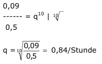

Aufgabe 244 Der Wirkstoff einer Tablette baut sich im Körper exponentiell ab. So befinden sich 10 Stunden nach der Einnahme einer 0,5 g Tablette noch 0,09 g im Körper. Wie viel g befinden sich um 20.00 noch im Körper, wenn jemand um 9.00 eine und um 15.00 zwei weitere einnimmt? W10 = W0 * q10 0,09 = 0,5 * q10 |:0,5  15.00 bis 20.00 sind 5 Stunden, 9.00 Uhr bis 20.00 sind 11 Stunden. W = 0,5 * q11 + 2 * 0,5 * q5 = 0,5 * 0,8411 + 0,845 = 0,49 g